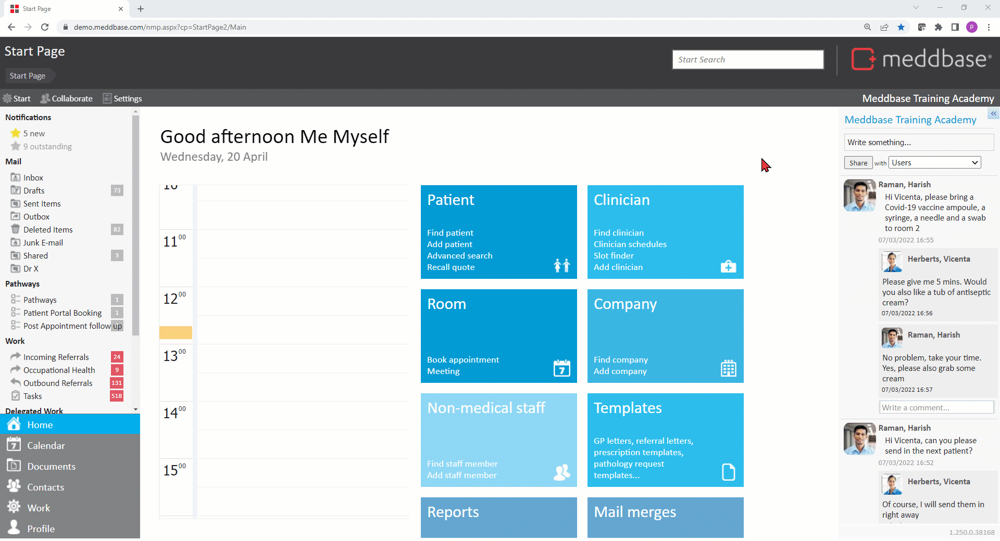

Meddbase System Administrators/Superusers with access to the Admin section of the Start Page can view and modify a host of configuration options and settings controlling the behaviour and workflows in the application. Many of the above are configured/controlled via the Configuration section*.
This article is a part of a collection of articles on the Admin > Configuration section. Click here for an overview article.
Many of the settings described in this series have default values when a Meddbase chamber is first created and do not need changing.
* Access to the Admin section and the ability to add/change configuration and settings are determined by the User's Role Group membership and Security Policy permissions granted. Please refer to the below articles for more details.
Understanding Role Groups - Definitions, related workflows and behaviours
This article is an overview of the Admin > Configuration > Application section and the available settings within.
To access the Configuration section, a permitted User should:-

The below table explains each setting, field and/or tick box in detail:
| Setting | Description/effect |
|---|---|
| Chamber domain key / user login prefix | This field is populated when the chamber is created by MMS. Please note! Meddbase end users do not have the ability to change/amend the chamber domain key. If you feel it needs changing, please contact MMS Support or your Account Manager. |
| Start of day | When creating sessions, e.g. for a Clinician via Site Scheduler, you create the session duration (Start and Finish times) on a Timeline. This setting allows you to determine when the Timeline should start, e.g. 02:00 Start of day would mean you'll be able to create sessions from 2 am onwards. |
| End of day | As per the above, this setting allows you to determine when the Timeline should finish, e.g. 21:00 End of day would mean you'll be able to create sessions lasting until 9 pm at the latest. |
| Working days per week | This field allows entering a numerical value 1 -7, determining how many days in any given calendar week will be considered 'working days'. This setting affects SLAs (Service Level Agreement) in OH, where you have X number of working days to place an appointment or finish a report. Furthermore, this setting affects notice periods for Cancellations, DNAs and Reschedules when the Cancellation Charges Rule has the 'consider working days only' option enabled. Please note! The recommended value for this field is either 5 (working days are Mon - Fri) or 7 (full working week) |
| File download 'No login' time (secs) | This setting is used if you download document as a .meddbase file, which you can then open using the Document Manager application on your local PC. The timeout represents a number of seconds you are not asked for credentials when you open or save a document. It is measured from the moment the document was downloaded. E.g. if timeout is 1h:
|
| Thumbnail size (in pixels)
| Once a user uploads a big image, e.g. 5MB big image in a high resolution, the system creates a thumbnail. If the user is looking at the image via the documents section of a Patient, Medical Person or Company record page, they do not need to wait for the browser to download & render an entire 5MB image because Meddbase gives the user a thumbnail which is usually a few kilobytes. E.g. an image had 3MB and the resolution was 2448x3264px. What the user sees, e.g. in the patient record has 64kB and resolution 525x700px because the configuration is set to 700px. |
| Screensaver timeout (minutes) | Meddbase has a time-sensitive screen saver for security purposes. Once the user is inactive for a set period the screensaver becomes active, and the user will be prompted to re-enter their password. This field allows you to change the preferred time (in full minutes). |
| Default city | This field allows typing in a default city name and that city will be auto-populated in the address section for a new Patient, Medical Person and/or Company record |
| Country calling code | This field allows setting the chamber default country calling code, e.g. 44 for the UK, 353 for Ireland etc. If you provide a local number (without a country code), e.g. when adding a Patient, then Meddbase uses this setting to validate & persist the number. |
| VAT | This field allows setting the VAT rate for the chamber. Please note! The value must be expressed as a decimal number, so a 20% VAT rate must be expressed here as 1.2 |
| External IPs considered internal | This box allows listing static IP addresses that the system will consider Internal, meaning users will be able to log into Meddbase from these IP addresses without having the 'External IP Address Allowed' box ticked under Admin > User Management |
| Must provide a DOB for patients | This checkbox controls whether the DOB (Date of Birth) will be mandatory when adding a new Patient record to Meddbase. If DOB is left blank, the user will be prompted to provide the value and will be unable to save the patient record. Please note! This setting can works independently from the 'Empty DOB on patient save' checkbox described below. |
| Default recall appointment type | When booking an appointment from a Recall Reminder work item, the appointment type selected here will be the one presented to the user by default with the option to select an alternative appointment type as needed. Please note! To create an appointment type to select here, navigate to Admin > Appointment Admin > New. Furthermore, the user(s) responsible for actioning Recall Reminder work items must be added to the Recall Reminder Admin role group. To add users to the group, navigate to Admin > User Management |
| Non-attendees can provide notes in consultation | This checkbox controls whether users who are not the primary attendee in a consultation have a right to edit an episode/enter data into a Clinical Form. |
| Show message-feed on start-page | This checkbox controls whether the chamber's message feed, allowing users to ask questions, make announcements etc. and communicate with groups of users, is displayed on the Start Page. |
| Show online users on start-page | This checkbox controls whether the 'People Online' section, showing users currently logged into the chamber, is displayed on the Start Page. Please note! With this box ticked/checked, the 'People Online' section will only become visible when there are at least 2 users logged in simultaneously. |
| Prompts | |
| Empty DOB on patient save | This checkbox controls whether a user is warned via a pop-up about the DOB (Date of Birth) field having been left empty when adding a new patient. Please note! This checkbox works independently from the 'Must provide a DOB for patients' setting described above. |
| Resource double booking on appointment save | This checkbox controls whether the user receives a pop-up warning when saving an appointment booking for a given time and the Clinician and/or Patient already have an existing booking for the same time or there is an overlap. |
| Location double booking on appointment save | This checkbox controls whether the user receives a pop-up warning when saving an appointment booking for a given time and the location for the appointment, e.g. Consultation Room 1 already has an existing booking for the same time or there is an overlap. |
| Past booking on appointment save | This checkbox controls whether the user receives a pop-up warning when saving an appointment booking for a time in the past. Please note! Meddbase allows booking into the past. With this setting set to 'True'/ticked, the user will need to confirm the booking into the past on the warning pop-up. The above 3 settings are often used in concert. When all 3 settings are set to 'True'/ticked, all applicable warnings are presented on a single pop-up warning, so the user can acknowledge and confirm all of them with a single click. |
| Sending alerts on amended appointment | This checkbox controls whether a user is warned via a pop-up that a 'new booking alert will be sent to the patient and attendees' when making a change to an appointment booking, e.g. changing the time or location |
| Attendee availability on appointment save | This setting controls whether the system checks if the attendee is available (i.e. there is an existing empty slot in attendee's calendar/site session) and whether it warms the user if there isn't an empty slot. |
| Location conflict on account site session save | This checkbox controls whether the user receives a pop-up warning when saving a clinician's session via Doctor Details > Site Scheduler where another session already exists for the same time at the same location e.g. Consultation Room 1 in London |
| Patient admin-notes highlight | This checkbox controls whether the outline of the Admin Notes section flashes red when navigating to a Patient Record page. |
| Single sign-on | |
| Enable single sign-on | This checkbox enables single sign-on for the chamber. Please note! There are additional configuration steps following setting this checkbox to 'True'. Enabling single sign on will disable all local sign ins except for support users. |